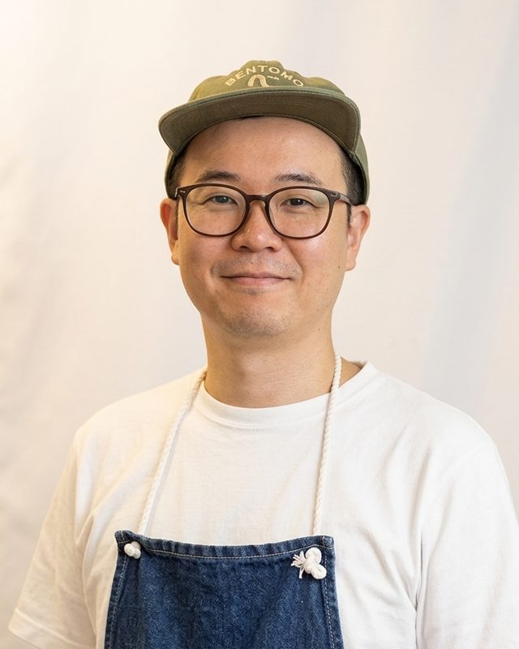

02 / 当事者
「本気でやる」と、
「正しいやり方でやる」は、
違いました。
印刷業界で約20年勤めたのち、コロナ禍をきっかけに、妻と温めていた夢に踏み出しました。飲食未経験のまま始めた弁当店「べんとも」です。
最初は、知らないことだらけでした。
- 01仕入れの買い出しを、全部自分でやっていた
- 02勤怠管理を、手作業で済ませていた
- 03店頭で待つだけの、「待ち」の商売だった
- 04法人の弁当需要に、あとから気づいた
- 05仕込みにかかる時間を、見誤った
どれも、知らなかっただけでした。知らなかったことを、先にお伝えします。
